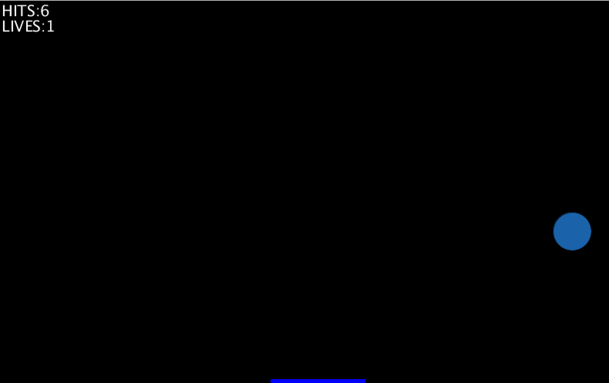
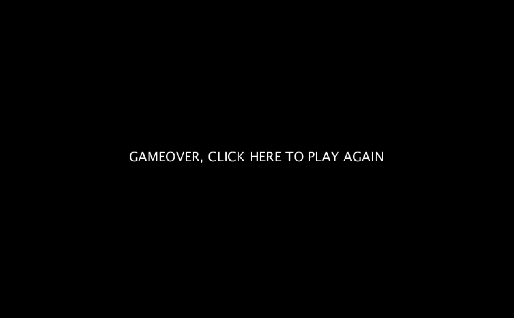
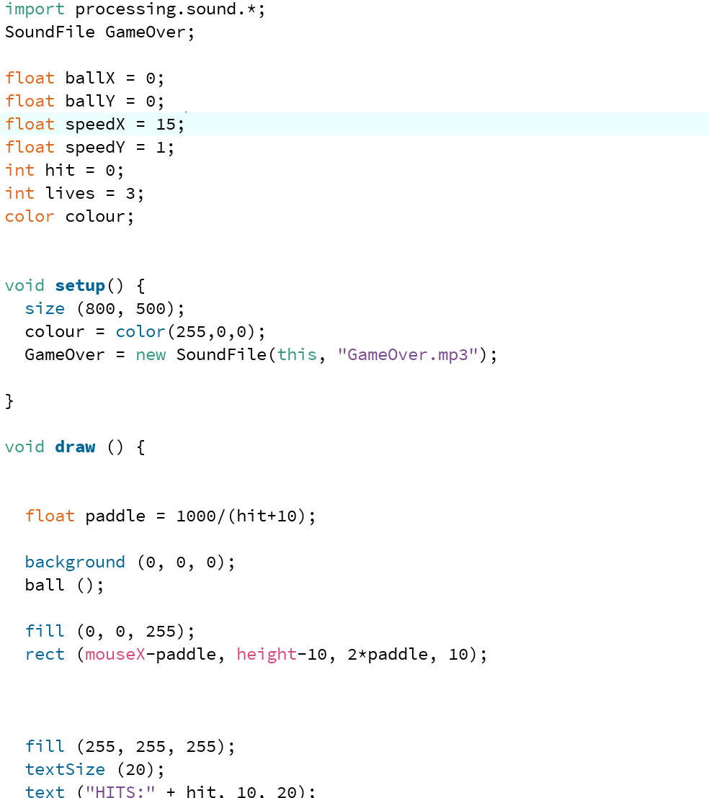

Ahmad Al-HomaidI am an 18 year old student at City, University of London. I am studying Computer Science with Cybersecurity. On the 28th of september, I have started my first time programming during the 2 weeks of Java BootCamp. Ever since we started the bootcamp week, I knew that this would be a tough year since it's my first time programming and the pandemic has caused a huge problem for most students. It's the first time for me studying online and I have studied in french school for 12 years and converting to an english system is also new to me. Hopefully this will be an amazing year where I could learn many new things and soon I could come to London and start attending at my University. |
||
|
|
||
Bootcamp 2020: Forest sceneMy first programming project, concluding the 2 week Programming Bootcamp at City (2020). This Processing project shows what I have learned and followed during these 2 weeks. I have used as much as I could to show that at the end I am capable of programming in processing. I have created a mini game in which the ball should not fall on the ground and instead bounce on the paddle, and each time it hops, the ball changes its color and paddle gets smaller. You can find your "score" and "lives" on the top left side of the screen. If the ball touches the bottom of the screen it's gameover and you can play again by clicking on the mouse (you can also reset the score by clicking before the game ends). I have also put a sound when the game is over. Check out the code on Github: https://github.com/itx02/MyProject.git/ | ||
|    | ||